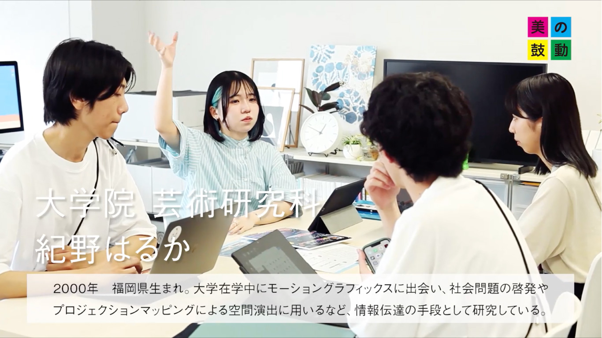

美の鼓動｜キャンパス編
テレビ出演
TV
テレビ西日本の「美の鼓動・九州」に出演させていただきました。
こちらは九州のクリエイターを紹介する2分程度の番組です。
大学院で研究を続けているモーショングラフィックスとプロジェクションマッピングについてお話させていただきました。
緊張で正直こんなこと言ってたんだ、とOAを見た後は恥ずかしい気持ちになりましたが、地上波に出るという貴重な機会をいただき、有り難かったです。
インタビューを通して、私がやってきたことやこれからやっていくことを改めて考えることができ、自分の中のデザインの核心を見直すことができたように思います。
美の鼓動・九州 概要
絶対も、正解も、限界もない芸術の世界…。
九州では、無から有を生み出す芸術力が日々育まれています。
この番組では、古きを継承し、新しきモノを生み出すクリエーターを紹介します。
美の鼓動・九州 | テレビ西日本： キャンパス編｜九州産業大学 紀野はるか